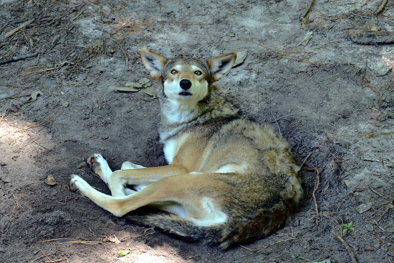

Le vent se lève, glacial, il souffle autour de toi, se glisse dans ton pelage et t'arrache des frissons. Tu es heureux de rejoindre la forêt et de te frayer un chemin entre les grands sapins et bouleaux de la taïga boréale, à l'abri des bourrasques glaciales.
Tes pattes s'enfoncent dans le tapis de feuilles mortes et d'épines. Elles crissent sur le sol gelé de la forêt. A ces hautes latitudes, il est gelé sur plusieurs mètres d'épaisseur.
On appelle ce sol le permafrost, ou pergélisol.
L'été venu, seule une couche superficielle dégelera. Le sol se gorgera d'eau liquide en surface et les bactéries se remettront à dégrader la matière organique accumulée : des feuilles mortes, des carcasses animales, des déjections... Dégradée par les bactéries, cette matière redeviendra poussière.
Mais un peu plus bas,
le sol est constamment gelé, même en été.
L’eau emprisonnée n’y existe que sous forme solide, ce qui empêche toute vie.
Aucune bactérie ne s’aventure jusqu’au permafrost.
Pourtant, elles s’en donneraient à cœur joie,
car
le sol gelé de Sibérie regorge de carcasses de mammouths et d’autres créatures préhistoriques tombées dans les tourbières
qui s’étendaient dans la région au Pléistocène, à l’époque où des mammouths batifolaient sur Terre.
Piégées dans les tourbières humides, leurs carcasses ne se sont jamais décomposées. Aujourd’hui, elles restent
conservées par le froid dans le permafrost
qui s’étend au Nord du cercle polaire Arctique.

Ton loup mène une vie paisible dans la taïga. Mais un jour, alors qu'il flairait la piste d'un lapin dans une clairière, le sol se liquéfie et s'effondre sous ses pieds. Te voilà piégé au fond d'une crevasse, empêtré jusqu'au cou dans la boue. Tu grognes de colère. D'où vient ce trou ?
Un oiseau se penche au bord de la crevasse et te pépie une réponse. Tu écoutes en boudant cet oiseau de malheur qui te nargue :
- La planète se réchauffe, loup ! T'as remarqué ? Même ici, en Sibérie.
Le permafrost dégèle pour la première fois depuis des milliers d’années !
L’eau glacée s’y liquéfie, le sol s’effondre, des maisons et des routes sont emportées par des glissements de terrain.
Les arbres penchent et s’écroulent de tous côté. Pire :
La fonte du permafrost amplifie le réchauffement climatique.
Car l’eau liquide amène la vie, et les bactéries rappliquent dans le sol dégelé.
Elles s’activent et décomposent des tonnes et des tonnes de matière organique jusque-là piégées dans le permafrost.
Les longues chaînes de carbones qui formaient les carcasses de mammouths, les branches et les racines
tout est
dégradé en milliards de petites molécules de CO2 libérées vers l’atmosphère.
Et ces quantités astronomiques de gaz à effet de serre réchauffent encore la planète…
Tu as intérêt à vite sortir de cette tourbière si tu ne veux pas finir dans le ciel, toi aussi, dégradé en CO2 ! Tu t'extirpes tant bien que mal à l'aide de longues racines. Et maintenant ? Et si tu allais croquer un ou deux bipèdes ? Après tout, les humains t'ont mis dans la gadoue. Ce sont eux, les responsables ! Tu pars semer la terreur, enchanté à cette idée.
Mais entre temps, les humains ont enfin compris le problème. Il fait de plus en plus chaud sur Terre. Comment limiter le réchauffement ? En allant dans le sens de la nature.
Les citadins se décident à ralentir leur train de vie, à limiter leurs déplacements et leur consommation. Ils relâchent leur emprise sur la nature qui reprend enfin ses droits. Ton loup croise moins de bipèdes et toujours plus de bêtes sauvages.
La forêt s'étend.
Les arbres poussent et puisent du CO2 dans l’atmosphère pour leur croissance…